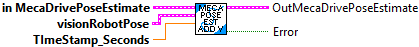
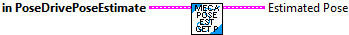
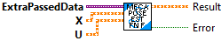
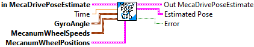
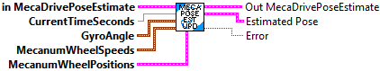
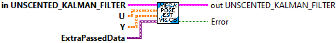

Add a vision measurement to the Unscented Kalman Filter. This will correct the odometry pose estimate while still accounting for measurement noise.
This method can be called as infrequently as you want, as long as you are calling MecaDrivePoseEstimator_update every loop.
To promote stability of the pose estimate and make it robust to bad vision data, we recommend only adding vision measurements that are already within one meter or so of the current pose estimate.
Inputs:
- MecaPoseEst -- Data cluster containing SwervePoseEst data
- visionRobotPoseMeters -- The pose of the robot as measured
by the vision camera.
- timestampSeconds -- The timestamp of the vision measurement in
seconds. Note that if you don't use your own time
source by calling SwerveDrivePoseEstimator_updateWithTime
then you must use a timestamp with an epoch since FPGA
startup (i.e. the epoch of this timestamp is the same
epoch as Timer.getFPGATimestamp.) This means that you
should use Timer.getFPGATimestamp as your time source or
sync the epochs.
Outputs:
- outMecaPoseEst -- Updated data cluster
- Error -- If TRUE, an error occured.

Gets the pose of the robot at the current time as estimated by the Unscented Kalman Filter.
Inputs:
- MecaPoseEst -- Data cluster containing SwervePoseEst data
Outputs:
- EstimatedPose - The estimated robot pose in meters.

Meca Drive Pose Estimator, Kalman Filter F function.
This function returns the U matrix.
Input:
- ExtraPassedData -- Variant contaiing extra data for the callback For this function the extra data should be empty..
- X Matrix -- X matrix
- U Matrix -- U matrix
Output:
- Result -- Matrix resulting from calculation
- Error -- If TRUE an error occured
Mecanum Drive Pose Estimator, Kalman Filter H function.
This function returns row 2 of the X matrix.
Input:
- ExtraPassedData -- Variant contaiing extra data for the callback For this function the extra data should be empty..
- X Matrix -- X matrix
- U Matrix -- U matrix
Output:
- Result -- Matrix resulting from calculation
- Error -- If TRUE an error occured

Constructs a MecaDrivePoseEstimator.
This data cluster and its associated function blocks wrap an UnscentedKalmanFilter Unscented Kalman Filter to fuse latency-compensated vision measurements with mecanum drive encoder velocity measurements. It will correct for noisy measurements and encoder drift. It is intended to be an easy but more accurate drop-in for MecanumDriveOdometry.
MecanumDrivePoseEstimator_update should be called every robot loop. If your loops are faster or slower than the default of 20 ms, then you should change the nominal delta time using the secondary constructor: MecanumDrivePoseEstimator_MecanumDrivePoseEstimator(Rotation2d, Pose2d MecanumDriveWheelPositions, MecanumDriveKinematics, Matrix, Matrix, Matrix, double).
MecanumDrivePoseEstimator_addVisionMeasurement can be called as infrequently as you want; if you never call it, then this data cluster will behave mostly like regular encoder odometry.
The state-space system used internally has the following states (x), inputs (u), and outputs (y):
x = [x, y, theta, s_fl, s_fr, s_rl, s_rr]T
in the field coordinate system containing x position, y position, and heading, followed by
the distance driven by the front left, front right, rear left, and rear right wheels.
u = [v_x, v_y, omega, v_fl, v_fr, v_rl, v_rr]T
containing x velocity, y velocity, and angular rate in the field coordinate system,
followed by the velocity of the front left, front right, rear left, and rear right wheels.
y = [x, y, theta]T
from vision containing x position, y position, and heading; or
y = [theta, s_fl, s_fr, s_rl, s_rr]T
containing gyro heading, followed by the distance driven by the front left, front
right, rear left, and rear right wheels.
Inputs:
- gyroAngle -- The current gyro angle.
- initialPoseMeters -- The starting pose estimate.
- wheelPositions -- The distances driven by each wheel.
- kinematics -- A correctly-configured kinematics object for your drivetrain.
- stateStdDevs -- Standard deviations of model states. Increase these numbers
to trust your model's state estimates less. This matrix is in the
form [x, y, theta, s_fl, s_fr, s_rl, s_rr]T, with units in meters
and radians, followed by meters.
- localMeasurementStdDevs -- Standard deviation of the gyro measurement.
Increase this number to trust sensor readings from the gyro less.
This matrix is in the form [theta, s_fl, s_fr, s_rl, s_rr], with
units in radians, followed by meters.
- visionMeasurementStdDevs -- Standard deviations of the vision measurements.
Increase these numbers to trust global measurements from vision
less. This matrix is in the form [x, y, theta]T, with units in
meters and radians.
- nominalDtSeconds -- The time in seconds between each robot loop.
Outputs:
- outMecaPoseEst -- Updated data cluster
- Error -- If TRUE, an error occured.

Resets the robot's position on the field.
(NOTE -- For LabVIEW version, this may not be needed.) You NEED to reset your encoders (to zero) when calling this method.
The gyroscope angle does not need to be reset in the user's robot code. The library automatically takes care of offsetting the gyro angle.
Inputs:
- MecaPoseEst -- Data cluster containing SwervePoseEst data
- poseMeters -- The position on the field that your robot is at.
- gyroAngle -- The angle reported by the gyroscope.
- wheelPositions -- The distances driven by each wheel.
Outputs:
- outMecaPoseEst -- Updated data cluster

Sets the pose estimator's trust of global measurements. This might be used to change trust in vision measurements after the autonomous period, or to change trust as distance to a vision target increases.
Inputs:
- MecaPoseEst -- Data cluster containing MecaPoseEst data
- visionMeasurementStdDevs -- Standard deviations of the vision measurements. Increase these
numbers to trust global measurements from vision less. This matrix is in the form
[x, y,theta]?,
with units in meters and radians.
Outputs:
- outMecaPoseEst -- Updated data cluster
- SizeCoereced -- If TRUE, an unexpected error occured. Execution may continue.

Updates the the Unscented Kalman Filter using only wheel encoder information. This should be called every loop, and the correct loop period must be passed into the constructor of this class.
Inputs:
- In Meca Pose Est -- Input data cluster.
- gyroAngle -- The current gyro angle.
- wheelSpeeds -- The current velocities wheels.
- wheelPositions -- The distances driven by each wheel.
- currentTimeSeconds -- (Optional) Time at which this method was called, in seconds.
Outputs:
- outMecaPoseEst -- Updated data cluster
- EstimatedPose -- The estimated pose of the robot in meters.
- Error -- If TRUE, an error occured.

Updates the the Unscented Kalman Filter using only wheel encoder information. This should be called every loop, and the correct loop period must be passed into the constructor of this class.
Inputs:
- MecaPoseEst -- Data cluster containing SwervePoseEst data
- currentTimeSeconds -- Time at which this method was called, in seconds.
- gyroAngle -- The current gyroscope angle.
- WheelSpeeds -- The current wheel velocities.
- wheelPositions -- The distances driven by each wheel.
Outputs:
- outMecaPoseEst -- Updated data cluster
- EstimatedPose -- The estimated pose of the robot in meters.
- Error -- If TRUE, an error occured.

Mecanum Drive Pose Estimator function used to update Kalman FIlter.
This function calls the UnscentedKalmanFIlter Correct function with U, Y, VisionContR matrices.
The parameters of this function are fixed since it's reference is passed to other functions. This is why the VisionContR matrix needs to be passed as extra data.
Inputs:
- Unscented Kalman FIlter -- Input data cluster
- U -- U matrix
- Y -- Y matrix
- ExtraData -- Variant containing extra data. For this call the extra data must contain the VisionContR Matrix.
Outputs:
- Out Unscented Kalman FIlter -- Updated data cluster

Mecanum Drive Pose Estimator, Kalman Filter H function for vision correction. This function passes the X matrix to the resulting matrix. No calculations are done.
Input:
- ExtraPassedData -- Variant contaiing extra data for the callback For this function the extra data should be empty..
- X Matrix -- X matrix
- U Matrix -- U matrix
Output:
- Result -- Matrix resulting from calculation
- Error -- If TRUE an error occured